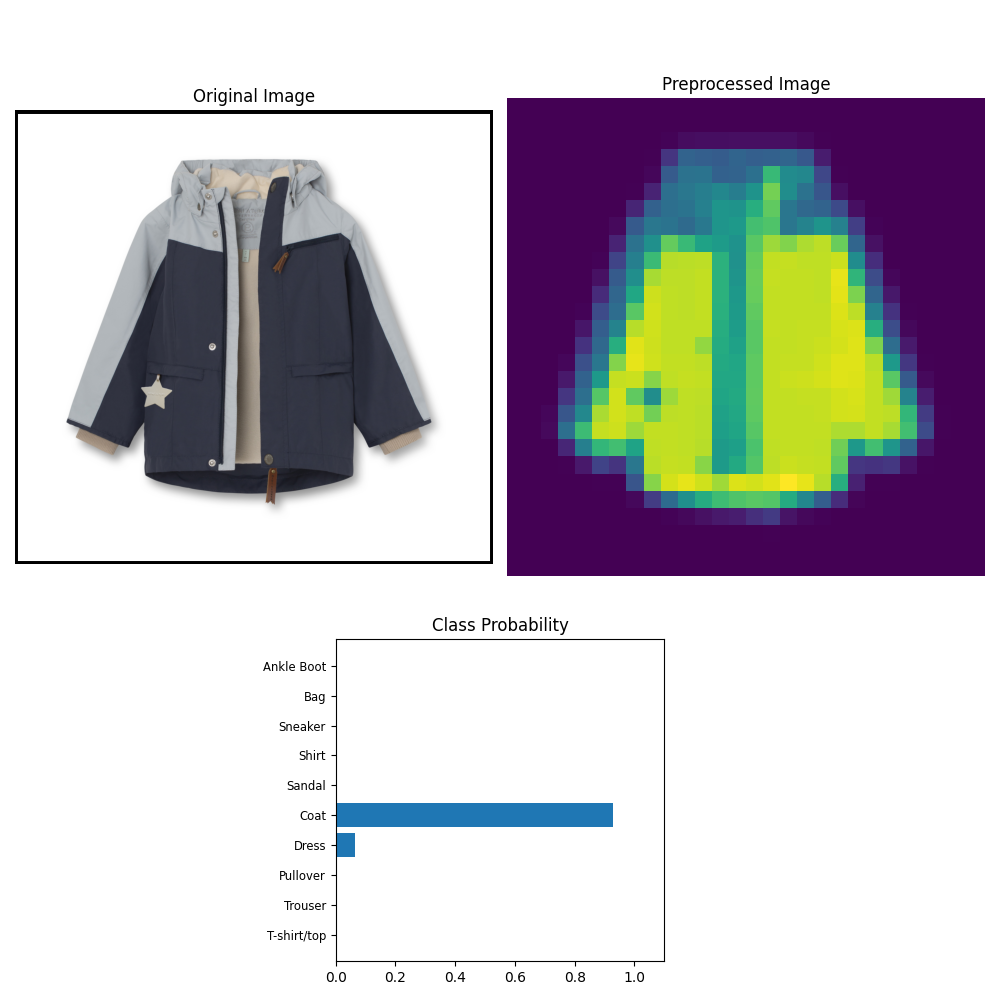

CNN* The Clothing Neural Network
Deep learning application designed for image inference, built with a neural network trained on the Zalando fashion-MNIST dataset https://github.com/zalandoresearch/fashion-mnist. The dataset contains images of fashion items, and the model classifies these images into one of ten categories.
Model Architecture
The neural network used for training is constructed using the fc_model.Network class. Below are the key components:
Network Architecture: The
Networkclass infc_model.pydefines a fully connected neural network. It takes the input size, output size, and a list of integers representing the sizes of hidden layers as parameters. The architecture can be dynamically adjusted, but in the current project, it is instantiated with an input size of 784, output size of 10, and three hidden layers with sizes [512, 256, 128] respectively:model = fc_model.Network(784, 10, [512, 256, 128])Activation Function: The network uses ReLU (Rectified Linear Unit) as the activation function for hidden layers and LogSoftmax for the output layer.
Loss Function: The negative log likelihood loss function (
nn.NLLLoss()) is utilized for training the network.Optimizer: The Adam optimizer is employed with a learning rate of
0.001to adjust the weights in the network during training.

Training Details
- Epochs: The network is trained for 20 epochs. Each epoch iterates over the entire dataset to update the model's weights based on the calculated loss.